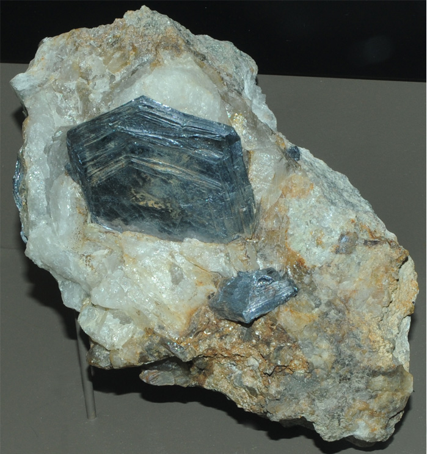
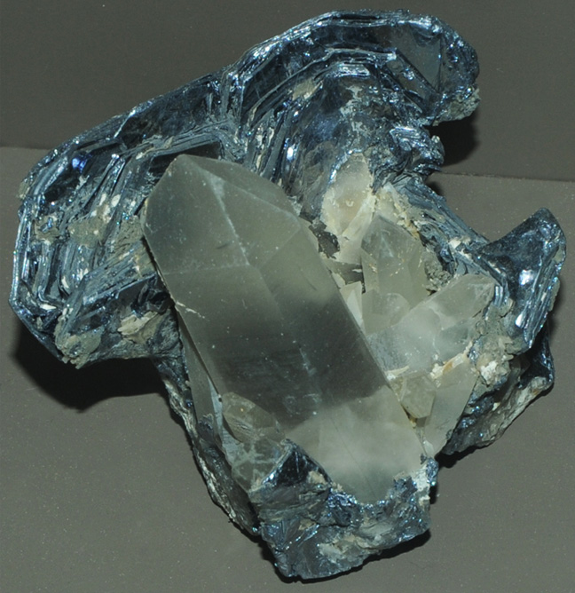
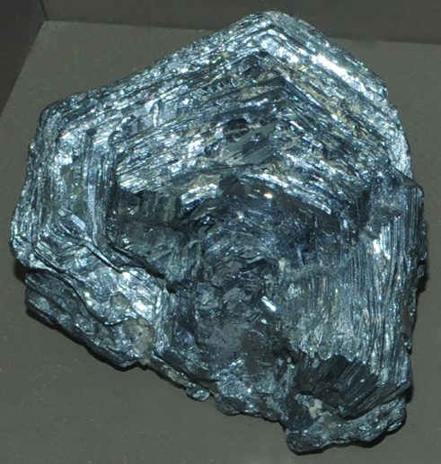

Molybdenite
|

| MoS2
This sample of molybdenite is displayed in the Smithsonian Museum of Natural History. Molybdenite is a sulfide mineral of molybdenum with the composition MoS2. The sample at left is about 10 cm across and is from Chelan, Washington.
|
|
This sample of molybdenite is about 12 cm across and is from Allies mine, Deepwater, New South Wales, Australia. It is described as molybdenite with quartz.
|  |
|

| This sample of molybdenite is is about 10 cm across and is from German Bill mine, Wolfram camp, Queensland, Australia.
Mindat: Molybdenite
|
|
Index |